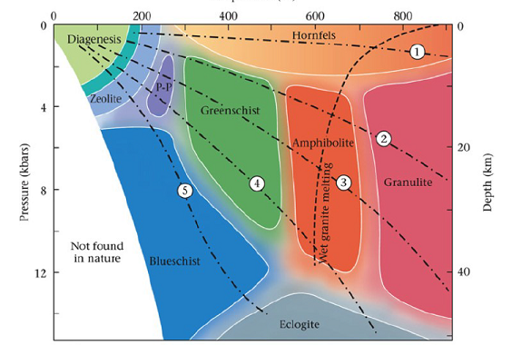

Métamorphisme
Qu'est ce que le métamorphisme ?
Le métamorphisme est un ensemble de transformations structurales et minéralogiques des roches à l'état solide. La roche mère est sédimentaire, magmatique ou métamorphique: protolithe qui nous donnera différentes séquences métamorphiques. Sous l'effet des variations de P,T avec ou sans présence de fluides, on a différents gradients métamorphique.
Lors des phases de recristallisation, on a l'apparition et la disparition de phases minéralogiques. Les déformations se font avec ou sans recristallisation.

Il existe différentes types de chemins que peut faire la roche dans le domaine de pression et de température.

- : Enfouissement de roches supra crustales, et exhumation à des vitesses différentes
- Même chose
- Idem pour une roche de la croûte inférieure
- Roche magmatique (basique) se mettant en place à la base de la croûte et refroidissant
- Gabbro de la croûte océanique refroidissant avec l’éloignement à la dorsale
- Intrusions magmatiques subissant une compression, suivie d’une exhumation
Le terme isograde défini les lignes d'égale intensité du métamorphisme marquées par l'apparition ou la disparition de minéraux.
Le métasomatose
Le métamorphisme est isochimique en première approximation. Il est cependant accompagné d'un déshydratation des roches. Les fluides peuvent jouer un grand rôle : extraction, transport et/ou éléments. La solubilité des éléments varie avec la température et la pression.
Les réactions du métamorphisme
Les cortèges minéraux résultent :
- de la composition chimique de a roche initiale
- de l'état de cristallisation de cette roche initiale
- des conditions pression - température et ede teneur en ea